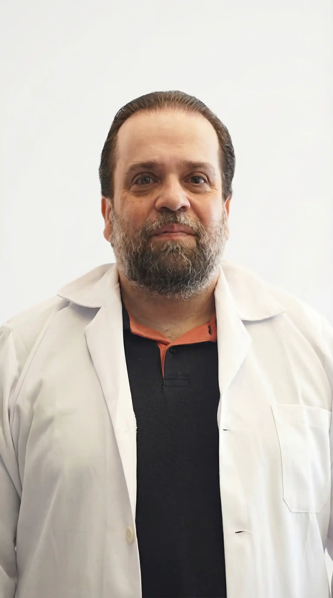

Uma clínica de imagens médicas que combina tecnologia avançada, rigor técnico e atendimento humanizado para oferecer segurança, confiança e excelência em cada etapa do seu diagnóstico.


A Dimagem é referência em diagnóstico por imagem em Ijuí e região há mais de 40 anos. Nossa história é construída com ética, precisão e confiabilidade, aliando tecnologia avançada a uma equipe qualificada para oferecer diagnósticos seguros e atendimento humanizado.
Para nós, cada exame carrega uma história de vida, e cada diagnóstico merece confiança, cuidado e excelência em cada detalhe.
Equipamentos modernos que garantem diagnósticos mais precisos.
Profissionais com ampla experiência e alto rigor técnico global.
Cuidado, atenção e conforto em cada etapa da sua experiência.
Acesso rápido, limpo e seguro a resultados 100% online.
Uma equipe multidisciplinar de radiologistas e especialistas com ampla experiência clínica, dedicados à precisão diagnóstica e ao cuidado individualizado com cada paciente.
Radiologista
CREMERS 6356
Radiologista · Saúde da Mulher
CREMERS 40050
Radiologista
CREMERS 33250

Radiologista · Saúde da Mulher
CREMERS 39882
Radiologia Oncológica
CREMERS 30143

Ecografista
CREMERS 32128

Radiologista
CREMERS 61172